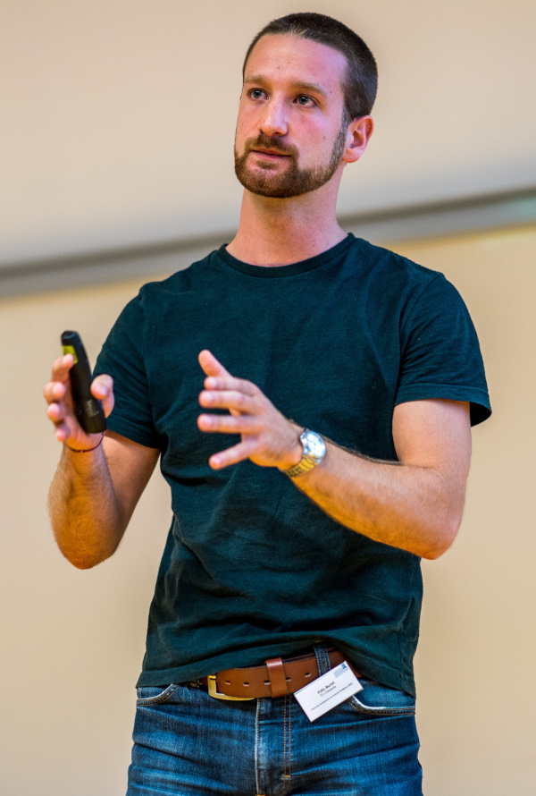
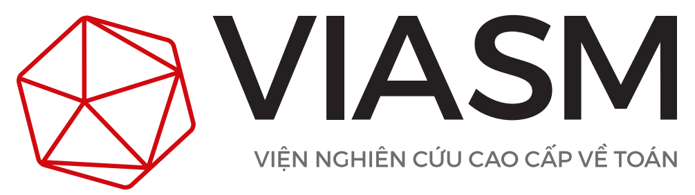
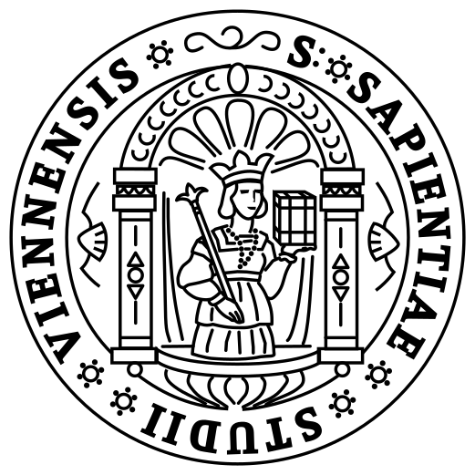

Contact
| felix | |
| KU Eichstätt-Ingolstadt MIDS Auf der Schanz 49 85049 Ingolstadt |
|
| MathSciNet Google Scholar ORCiD GitHub |

Research Interests
- high-dimensional approximation
- information-based complexity
- learning theory
- numerical analysis
- Fourier analysis
- rank-1 lattices
- function space theory
- probabilistic methods
- fast algorithms
- regularization theory — in particular cross-validation
- …
Academic Career
| since 10/2025 | postdoctoral researcher with Katholische Universität Eichstätt-Ingolstadt |
|
| 01/2025–09/2025 | postdoctoral researcher with University of New South Wales |
|
| 08/2024–09/2024 | research stay with VIASM |
 |
| 12/2023–12/2024 | postdoctoral researcher with Chemnitz University of Technology |
|
| 02/2023–07/2023 | research stay with University of South Carolina |
|
| 02/2022–07/2022 | research stay with University of Vienna |
 |
| 07/2019–12/2023 | doctoral studies with Chemnitz University of Technology |
|
| 10/2018–02/2019 | exchange semester via Erasmus, KU Leuven |
 |
| 10/2017–06/2019 | Master of Science in mathematics, Chemnitz University of Technology |
|
| 10/2014–10/2017 | Bachelor of Science in mathematics, Chemnitz University of Technology |
|
| 08/2006–07/2014 | GCE A-levels, Städtisches Gymnasium Mittweida |